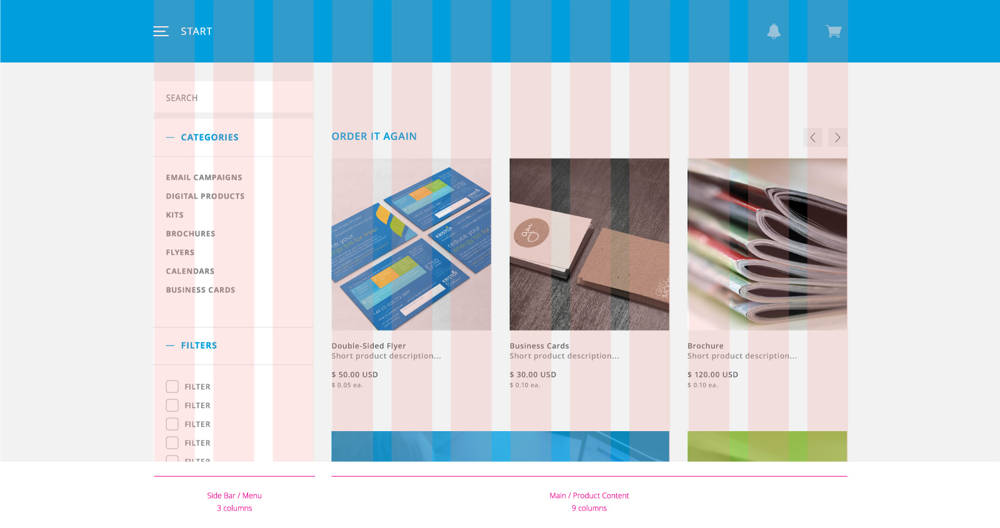
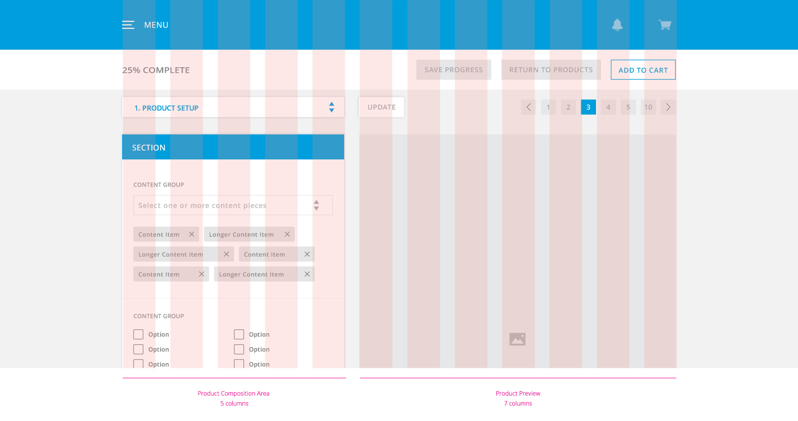
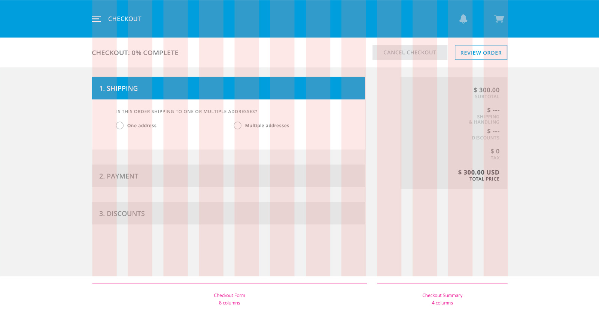
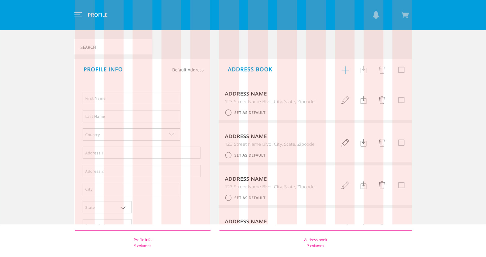
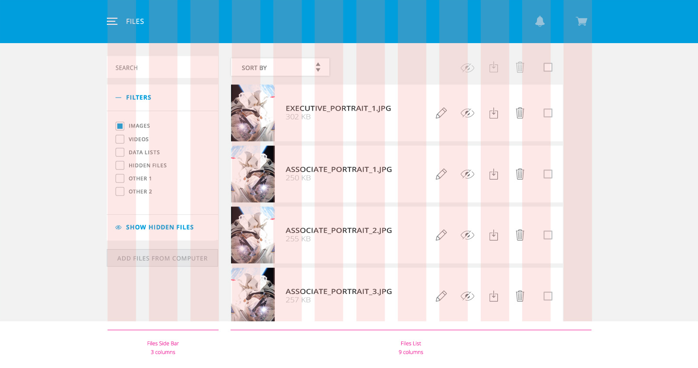

The bootstrap grid is an 1170px, 12 column grid. It has classes for extra small(phone), small(tablets),medium(desktops), and large(large desktops).
You can use `.col-lg-*` class prefix and the columns will stack as the screen size shrinks. If you don't want columns to stack on smaller sizes use the extra small and medium device grid classes by adding `.col-xs-* .col-md-*` to your columns.

Homepage Grid
The homepage uses a 3-9 column grid. Use `.col-lg-3` and `.col-lg-9' for grids. For responsive grids also add columns for med and sm sizes - `.col-med-3`,`.col-sm-3` and `.col-med-9`, `.col-sm-9`.
Product Grid
The product pages uses a 5-7 column grid. Use `.col-lg-5` and `.col-lg-7' for grids. For responsive grids also add columns for med and sm sizes - `.col-med-5`,`.col-sm-5` and `.col-med-7`, `.col-sm-7`.

Checkout Grid
The checkout pages uses a 5-7 column grid. Use `.col-lg-5` and `.col-lg-7' for grids. For responsive grids also add columns for med and sm sizes - `.col-med-5`,`.col-sm-5` and `.col-med-7`, `.col-sm-7`.

Profile Grid
The profile pages uses a 5-7 column grid. Use `.col-lg-5` and `.col-lg-7' for grids. For responsive grids also add columns for med and sm sizes - `.col-med-5`,`.col-sm-5` and `.col-med-7`, `.col-sm-7`.

Files Grid
The file pages uses a 5-7 column grid. Use `.col-lg-5` and `.col-lg-7' for grids. For responsive grids also add columns for med and sm sizes - `.col-med-5`,`.col-sm-5` and `.col-med-7`, `.col-sm-7`.
